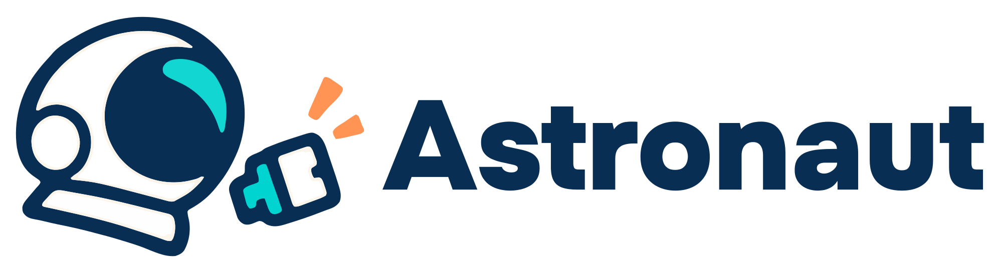
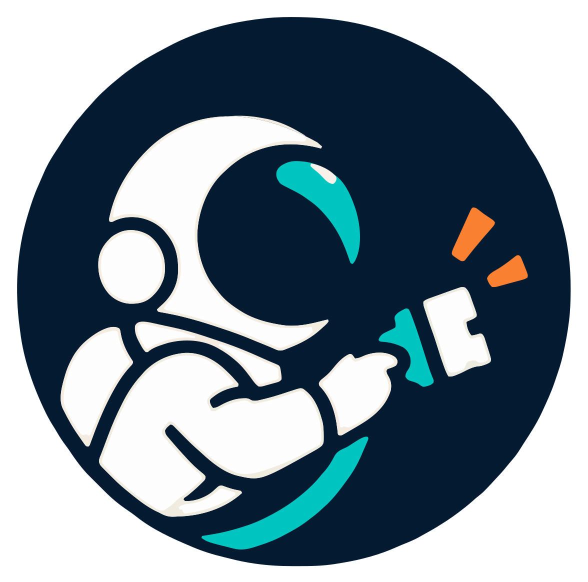

Программы обмениваются данными сами, а документы по грузу сверяются до отправки.

AstronautКонтейнер из Китая во Владивосток: десять документов, каждый заполняет свой человек в своей программе.
Итог: груз задержан, документ отклонён, платёж возвращён.
Перевозочные документы только электронные. Опечатка в ИНН значит остановку отгрузки. источник
Нельзя заключать договор с перевозчиком вне госреестра. источник
У них выручка за 2025 год упала: от −7% до −53%. Лишних людей на ручную сверку нет. источник: Чекко
Продаём ПО по подписке. Первый рынок: Владивосток, морской импорт из Китая.
Компания на 20–200 человек. ИТ-отдела обычно нет, решает директор.
Те, кто сегодня переписывает данные и ищет расхождения.
Одна карточка груза, считывание PDF, сверка документов, связь 1С и других программ, помощник в чате.
| Кто | Что для него успех |
|---|---|
| Заказчикдиректор экспедитора | Подписка окупается меньше чем за месяц: 80 ч × 500 ₽ = 40 000 ₽ выгоды против 27 110 ₽ допущение |
| Пользовательменеджер, логист | Проверить документ за минуту, а не за час ручного набора; видеть расхождение до отправки допущение |
| Инвесторвнешних денег нет, 0 ₽ | Проект сам покрывает инфраструктуру с первых платящих месяцев допущение |
| КомандаДаниил Комаров, [TODO: состав] | Три пилота и первый кейс к 4-му месяцу; работа без зарплаты до выручки допущение |
| Статья | В год |
|---|---|
| Серверы и языковые модели допущение 40 000 ₽ × 12 мес | 480 000 ₽ |
| Разработка допущение команда без зарплат | 0 ₽ |
| Итого | 480 000 ₽ |
Почему 40 000 ₽: ориентир из анкеты проекта, себестоимость серверов и моделей мы ещё не считали. Берём на весь год с запасом: в первые месяцы нагрузки почти нет.
Ключевое допущение: работа команды стоит 0 ₽. Если платить зарплату, добавится около 120 000 ₽ в месяц на человека. допущение
| Период | Клиенты | ₽ |
|---|---|---|
| Месяцы 1–3 | разработка, интервью | 0 |
| Месяцы 4–6 | 3 пилота | 170 793 |
| Месяцы 7–9 | 3 пилота + 3 клиента | 414 783 |
| Месяцы 10–12 | 3 пилота + 7 клиентов | 740 103 |
| Подключения разово | 4 на клиента | 425 880 |
| Итого за год | 1 751 559 | |
Пилотам −30%: 18 977 ₽. Подключение системы 11 700 ₽ разово, пилотам 8 190 ₽.
4-й месяц: выручка 155 211 ₽ при затратах 40 000 ₽. Три пилота (3 × 18 977 = 56 931 ₽) уже покрывают серверы.
допущение Расчёт целиком на допущениях, см. numbers.md.
| Сценарий | Доход | Затраты | Итог за год | В плюс с |
|---|---|---|---|---|
| Базовый, только инфраструктура | 1 751 559 | 480 000 | +1 271 559 | 5-го мес |
| Доход ÷ 2, только инфраструктура | 875 780 | 480 000 | +395 780 | 8-го мес |
| Базовый, полный бюджет* | 1 751 559 | 1 110 000 | +641 559 | 10-го мес |
| Доход ÷ 2, полный бюджет* | 875 780 | 1 110 000 | −234 220 | не за год |
| Выгода | Для кого | Как измерить |
|---|---|---|
| Репутация, кейс | команда | Число пилотов, разрешивших назвать компанию. Цель: 3 |
| Лояльность клиентов экспедитора | экспедитор и его клиенты | Звонков «где мой контейнер» в день до и после пилота |
| Соответствие закону | экспедитор | Отклонённых электронных накладных в месяц до и после |
| Обучение команды | команда | Число рабочих подключений: 1С, операторы документов, помощник |
| Технологический задел | команда, будущие рынки | Число отраслей кроме логистики. Сейчас: 0 |
| Риск | Вероятность / влияние | Что делаем |
|---|---|---|
| Рыночныймало целей, выручка падает | средняя высокое | Малый пакет, который клиенту окупается за месяц; потом ж/д экспедиторы и крупные |
| Рыночный: конкурентКонтур делает сверку у себя | средняя высокое | Быстрый пилот на одной сверке; работаем поверх всех систем |
| Техническийнет API: Альта, ГосЛог, терминалы | высокая среднее | Старт с загрузки PDF и ручной отметки; письма поставщикам параллельно |
| Регуляторный152-ФЗ, реестр российского ПО | средняя высокое | Юрист до первых документов; российский хостинг; крупным: свои серверы |
| Кадровыймаленькая команда без зарплат | высокая высокое | Малая инфраструктура; первую выручку направляем на найм |
20–30 реальных комплектов, допуск ±0,5% по нетто. Ложных срабатываний быть не должно. допущение
Наш «1% пользователей»: 8–10 интервью, затем 3 пилота на 4 недели, −30%. Порог: 5 из 10 видят боль, 3 из 10 готовы платить. допущение
Тариф: до 100 сделок в месяц. Прогоняем 1 000. Пока не проверено. допущение
Проект коммерческий, поэтому решает один вопрос: когда вернутся вложенные деньги. У нас вложения это инфраструктура, а вернутся они с первого месяца продаж.